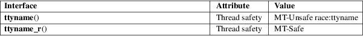

ttyname, ttyname_r − return name of a terminal
Standard C library (libc, −lc)
#include <unistd.h>
char
*ttyname(int fd);
int ttyname_r(int fd, char
buf[.buflen], size_t
buflen);
The function ttyname() returns a pointer to the null-terminated pathname of the terminal device that is open on the file descriptor fd, or NULL on error (for example, if fd is not connected to a terminal). The return value may point to static data, possibly overwritten by the next call. The function ttyname_r() stores this pathname in the buffer buf of length buflen.
The function ttyname() returns a pointer to a pathname on success. On error, NULL is returned, and errno is set to indicate the error. The function ttyname_r() returns 0 on success, and an error number upon error.
|
EBADF |
Bad file descriptor. | ||
|
ENODEV |
fd refers to a slave pseudoterminal device but the corresponding pathname could not be found (see NOTES). | ||
|
ENOTTY |
fd does not refer to a terminal device. | ||
|
ERANGE |
(ttyname_r()) buflen was too small to allow storing the pathname. |
For an explanation of the terms used in this section, see attributes(7).

POSIX.1-2008.
POSIX.1-2001, 4.2BSD.
A process that keeps a file descriptor that refers to a pts(4) device open when switching to another mount namespace that uses a different /dev/ptmx instance may still accidentally find that a device path of the same name for that file descriptor exists. However, this device path refers to a different device and thus can’t be used to access the device that the file descriptor refers to. Calling ttyname() or ttyname_r() on the file descriptor in the new mount namespace will cause these functions to return NULL and set errno to ENODEV.
tty(1), fstat(2), ctermid(3), isatty(3), pts(4)